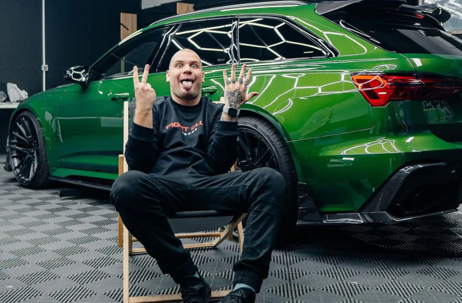

Kamil "Budda" Labudda
Kamil Labudda, znany w sieci również jako Budda TV, zyskał popularność dzięki swojemu kanałowi na YouTube, który założył 25 września 2019 roku. Jego kanał zajmuje tematyka motoryzacyjna, ale nagrywa także vlogi z wycieczek i akcji charytatywnych czy hojnych rozdań.
Budda urodził się 2 lutego 1999 roku w Warszawie. Od dziecka interesował się samochodami i motoryzacją. Jego ojciec był mechanikiem i nauczył go podstaw naprawy i tuningu pojazdów. Budda uczęszczał do technikum samochodowego, gdzie zdobywał wiedzę i umiejętności związane z branżą.
Jest on jedną z największych gwiazd YouTube. Labudda przyznał, ile zarabia jako youtuber. Kamil przyznał się, że zarabia miesięcznie średnio nieco ponad 55 tys.zł. Co istotne kwota pochodzi z samych wyświetleń na YouTube
Wiele wskazywało na to, że serce Youtubera jest wolne. On sam nie chwali się drugą połówką w mediach społecznościowych. Kamil Labudda jest szczęśliwy z kobietą, która według "tiktokowych detektywów" ma na imię Grażyna.
Budda w 2022 roku zarobił 661500 złotych. Daje to miesięczną kwotę na poziomie 55125 złotych. Oczywiście to tylko niewielka część pieniędzy składających się na łączne przychody z YouTube, do których wliczają się przecież również kontrakty reklamowe.